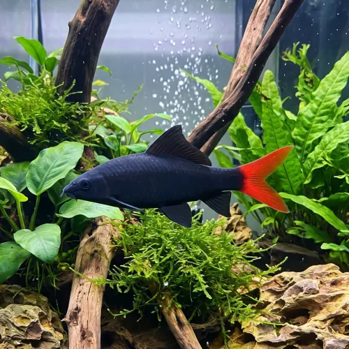

Nome popular principal
Labeo Bicolor
Labeo Bicolor, Tubarão Bicolor, Tubarão de Cauda Vermelha, Redtail Shark
Ficha de peixe
Labeos e Comedores de Algas
Um habitante territorial e deslumbrante de contraste preto e vermelho que exige espaço e abrigos para se destacar.

Nome popular principal
Labeo Bicolor, Tubarão Bicolor, Tubarão de Cauda Vermelha, Redtail Shark
Nome científico
Nome técnico essencial para taxonomia, cruzamento de manejo e referência editorial consistente.
Dificuldade de manejo
Use este nível como referência inicial, sempre considerando volume, estabilidade e compatibilidade do aquário.
Seção 1
Seção 2
Seções 4 a 6
Labeo Bicolor tem hábito alimentar onívoro. Excelente. 1 a 2 vezes ao dia. Consome raspagens de biofilme, mas necessita de rações afundantes à base de spirulina e alimentos proteicos variados.
Fêmeas adultas são ligeiramente maiores e com o ventre mais arredondado; machos exibem a cor preta mais intensa. Tipo de reprodução: Ovíparo. Dificuldade de reprodução: Avançado. A reprodução no aquarismo doméstico é extremamente rara, sendo realizada comercialmente em tanques com indução hormonal.
Alta. Substrato recomendado: Areia fina ou cascalho macio com muitas cavernas de pedras e troncos. Necessidade de esconderijos: Alta. Aprecia aquários com troncos, pedras com cavernas e vegetação densa para delimitar e proteger seu território.
Seção 7
Atinge até 15 cm e pode viver até 10 anos se mantido em água limpa com filtragem eficiente.
Seção 8
Não é recomendado em aquários comuns, pois eles são extremamente territoriais e perseguem intensamente outros peixes da mesma espécie.
Consome biofilme e algas quando jovem, mas não deve ter sua alimentação baseada apenas nisso na fase adulta.
Recomenda-se um aquário de no mínimo 200 litros para garantir espaço territorial e refúgio aos companheiros de tanque.